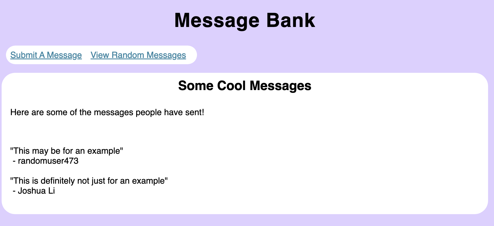

This post will look into creating a message bank using Flask. This message bank will allow for users to write in their own input, and to submit it to a database. They will also have the option to view past messages that have already been stored by the database. This post will direct you through the creation of this website. From this post, you will learn:
- The basic files necessary to run a web app
- How to connect templates to a .py file
- How to implement a database for the message bank
- How to stylize your application
- How to host your application locally
Let’s get started with building this message bank!
NOTE: All of these files take its inspiration from a lecture with examples in PIC 16B W23.
The Starting Files
Before going into the files necessary for creating a web application, please make sure that you have created a folder (preferably a cloned GitHub repository) to hold all of the files necessary. Please refer to the official GitHub documentation for instructions for how to clone a GitHub repository onto your local machine.
Now, starting with the files, it is important to have a couple of files. I will go through each of the files and how they add to the functionality of the web app.
app.py
The first file to create is the file app.py. It does not necessarily need to be called this, but this file will house the code necessary for the app to even run. In this file, you will define some python functions to assist you in your web app, as well as wrapper functions that will help determine what to display on a website, and which link is associated with that. Here are some of the code snippets that will be seen in this file:
import Flask
app = Flask(__name__)
@app.route('/')
def main():
passFrom this example, we see that we use the Flask library to run this code. We then have a unique function not commonly seen in every day Python use, which is @app.route. This refers to a relative URL path that will run the subsequent function. In this case, this will take the base URL and run a function main(), and will display that as the webpage.
Templates
Now that you have your app.py file, you now need to create templates that would act as what you would want to display on your website for given pages. In your directory, create a folder called templates, and begin to add template files in the form of .html.
For starters, here are some tags that will be helpful for you to better understand what is going on in HTML notation:
<title>: sets the title of the webpage, displayed on the browser tab.<nav>: section for navigation links<h1>: heading<ul>: unbulleted list<li>: list element<a>: link<section>: defines section<header>: heading of section
If you would like to learn more, please check out this link.
base.html
In this .html file, this will provide the basic template that the pages will follow, so that you don’t have to repeat the same code over and over again for different web pages of this website. Here is the code for my base.html. I will walk through some of the logic of my code.
<!doctype html>
<!-- <link rel="stylesheet" href="{{ url_for('static', filename='style.css') }}"> -->
<title>{% block title %}{% endblock %} - PIC16B Message Bank</title>
<nav>
<h1 class="title">Message Bank</h1>
<!-- <b>Navigation:</b> -->
<ul>
<li><a href="{{ url_for('submit') }}">Submit A Message</a></li>
<li><a href="{{ url_for('view')}}">View Random Messages</a></li>
</ul>
</nav>
<section class="content">
<header>
{% block header %}{% endblock %}
</header>
{% block content %}{% endblock %}
</section>First, I set my title for the webpage as {% block title %}{% endblock %} - PIC16B Message Bank. This brings us to some interesting notation, which is {% and %}. The purpose of those characters is to make anything within them a part of a template. So if another HTML file wants to overwrite the title in base.html, it can write anything in between {% block title %} and {% endblock %} to replace it. We will see this later.
Then, we get to the navigation, which contains two links in a list to either Submit A Message or View Random Messages, each linked with the respective page that they should redirect to.
Then, within the content section, we see again two more templates, one for the header and one for the content. We will see how we will alter this with different pages.
submit.html
The first page that we will need to make is a submit.html, so that users can write a message and submit it to the database. However, we do not need to rewrite the code written in base.html, but expand upon that by writing with the template blocks. Here is the code:
{% extends 'base.html' %}
{% block title %} Submit a Message {% endblock %}
{% block header %}
<h1> Submit a Message </h1>
{% endblock %}
{% block content %}
<form method="post">
<label for="message">Your Message:</label>
<br>
<textarea cols="80" rows="10" id="message" type="text" name="message" required>
</textarea>
<!--<input class = "msg" name="message" id="message">-->
<br>
<br>
<label for="user">Your Name or Handle:</label>
<input name="user" id="user" required>
<br>
<br>
<div class="text-center">
<input type="submit" value="Submit message">
</div>
</form>
{% if name %}
<p><b>Thanks for submitting a message! Here is your message:</b></p>
<p class="message">  "{{message}}" </p>
{% endif %}
{% if error %}
<br>
Please fill out both your message and your handle.
{% endif %}
{% endblock %}At the top, we see this code: {% extends 'base.html'%}. This lets our app know that this will build off of the template made from base.html. As I said earlier, we will only need to change the contents within the blocks, which is what we did. We change the title and header to display Submit a Message. We also change the content block with a <form> that will take in user input and allow them to submit that message.
We see that there are two other blocks containing if statements. This will be run only if the condition is held, which we will cover how to control when this happens.
view.html
The other page we need to create is the page to view other people’s submissions. It will follow the same base.html template, but will display different information than submit.html. Here is the code:
{% extends 'base.html' %}
{% block header %}
<h1>{% block title %}Some Cool Messages{% endblock %}</h1>
{% endblock %}
{% block content %}
{% if msgs %}
<p>Here are some of the messages people have sent!</p>
<br>
<br>
{% for msg in msgs %}
<div> "{{ msg[1] }}"
<br>  - {{ msg[0] }}
</div>
<br>
{% endfor %}
{% endif %}
{% if error %}
<br>
We could not display any messages. This is because there are no messages stored.
{% endif %}
{% endblock %}The logic is similar to that of submit.html, but now in the content block, we see that there is a for loop that will display messages if msgs is available.
These are the basic files that are necessary to run the file. Now, we need to work on piecing them all together so that app.py can connect to these pages and display them correctly.
Connecting the Templates to app.py
We need to connect all of these elements together, which will be implemented by creating wrapper functions that will run when the server calls a URL.
from flask import Flask, g, render_template, request
app = Flask(__name__)
@app.route('/', methods=['POST', 'GET'])
def submit():
if request.method == 'GET':
return render_template('submit.html') # default submit.html display
else: # if someone posts
try:
# insert the message to the database
msg, hndl = insert_message(request)
# display submit.html with conditions
return render_template('submit.html', name = hndl, message = msg)
except:
# return an error
return render_template('submit.html', error = True)
@app.route('/view/')
def view():
try:
# get 5 random messages
msgs = random_messages(5)
# display it
return render_template('view.html', msgs = msgs)
except:
# return an error
return render_template('view.html', error = True)We see that the submit page takes the base URL form through the @app.route. It contains two methods, which includes a 'GET' and 'POST', one which displays before and after a message submission, respectively. It will call render_template(), which will render submit.html, which extends base.html. Depending on the situation, it may add some keyword arguments, which would change the display based on if statements that we have discussed in Step 1. The same logic applies for view.html, which will redirect to a subpage with the path /view/, and run view() to render the page to view random messages.
Through these wrapper functions, whenever a user navigates through the message bank, this will help display the corresponding template correctly. Now, we need to connect this with the main purpose, which is to create messages and save it so that people can view it. This needs to be done through a database, which we would need to create functions in order to implement it with our web app.
Implementing a Database
In order to implement a database, we first need to create and get a database, and then add messages based on user submission, and pick a random amount to display.
Creation and Getting of Database
import sqlite3
DB_NAME = './messages_db.sqlite'
def get_message_db():
'''
Retrieves the message database
@ output:
- g.message_db: a database storing messages
'''
try:
# returns a database
return g.message_db
except:
# connect to a database
with sqlite3.connect(DB_NAME) as conn:
g.message_db = conn
# create a table if it doesn't exist
cursor = conn.cursor()
query = '''
CREATE TABLE IF NOT EXISTS messages (
id INTEGER PRIMARY KEY,
username TEXT,
message TEXT);
'''
cursor.execute(query)
# return the database
return g.message_dbWhat this function does is retrieve the database. If it does exist, then it will return the database. If it doesn’t exist, it will create a connection and create a table within the database and return the database. This is a function that will be used in the other functions to ensure that the same table will be used when inserting messages and viewing random messages.
Add Messages to Table
def insert_message(request):
'''
inserts a message into the database
@ input:
- request: URL requesting data from
@ output:
- message (str): the message the user input
- handle (str): the handle of the user
'''
# obtain the request and the information
message = request.form['message']
handle = request.form['user']
# get the table, and insert it into the table
with get_message_db() as conn:
cursor = conn.cursor()
cursor.execute("INSERT INTO messages (id, username, message) VALUES ((SELECT COUNT(*) FROM messages) + 1, ?, ?)", (handle, message))
conn.commit() # save changes
# return message and handle
return message, handleThis function will take a request, assuming that a user has submitted a message, and output the message and handle. This function will connect with the submission page of the website (see the submit() function). When a user provides input for both the message and the handle, the request will contain both of these inputs, and we will run insert_message() to store this into the database. The function itself will also take this message and handle and add it to the table through a SQL query, using get_message_db() in order to establish our connection.
This function also provides the output necessary to write a confirmation message to the user that their message was put into the database. We write the insert_message() to a local variable that contains the message and the handle. These become keyword arguments to render_template() to activate the if name statement within the submit.html so that the page would thank them for a message and spit out their message back to them to show what they have submitted (see submit.html).
Get Random Messages
def random_messages(n):
'''
picks at most n random messages from the message database.
@ input:
- n (int): how many messages to display
@ output:
- msgs (list): list of random messages
'''
# get the database
with get_message_db() as conn:
cursor = conn.cursor()
# select the random username and message
cursor.execute("SELECT username, message FROM messages ORDER BY RANDOM() LIMIT {0};".format(n))
msgs = cursor.fetchall()
# return list
return msgsThis function takes in a number n, and obtains n random messages, which is stored on a list. This connects with the view() function, where the number of messages to view is hard coded as 5. Using get_messages_db() to obtain the connection, we use a SQL query to randomly order the rows in the table and getting the top n messages. In the view() function, it is stored within a local variable called msgs, which is a list containing tuples with the message and handle. When render_template() is called with the argument msgs, we use a for loop cycle through the n messages and to display them on different <div> tags (see view.html).
These functions are all helpful in the web app, allowing for a database to be utilized to store messages created by users and to retrieve said messages for viewers’ entertainment.
Stylizing your Web App
Now that you have a functioning website, it looks unpolished within base HTML. It is quite simple to customize your own website so that it doesn’t look unfinished or even suspicious. This is done by adding a style.css file, which contains information about CSS selectors and how to style them. Here are some of the things that I did to make it more polished.
html {
font-family: sans-serif;
background: #DCD0FF;
padding: 1rem;
}
h1 {
color: rgb(0, 0, 0);
font-family: sans-serif;
margin: 1rem 0;
text-align: center;
padding: 10px 10px;
letter-spacing: 0px;
}
h1.title {
color: rgb(0, 0, 0);
font-family: sans-serif;
margin: 1rem 0;
text-align: center;
padding: 10px 10px;
font-size: 36px;
letter-spacing: 1px;
}There is a common structure placed among the .css file. It begins with an HTML tag, and within the brackets is a list of keywords that customize the contents within that respective tag. For example, the base text font within the <html> tag is sans-serif, and the background is lilac purple, as opposed to a generic white. Further customization is done to make the website look nice, and I would highly encourage you to look at the official CSS documentation for more information, as well as CSS Diner for practice.
Here is a screen cap of what the website looks like before and after the customization efforts.
Hosting your Web App
Awesome! You now have a fully functioning web application that will take in messages from users and display them on a page to view. How do you access this website though? This can be done through the terminal locally. Please open up a terminal with the repository as your working directory. Then, run these lines on your command line.
export FLASK_ENV=development
flask runThe output of flask run should give out a local path that you can type into your browser window to display your web app. Pictured below is an example of the output:
Now, you can see the fruits of your labor! This interface is helpful if you want to debug some of your code if something is not working properly, or to test out different customizations in CSS. You can also test out the functionality of the web app!
Here is what some of my website looks like. This is what the website looks like when the user wants to submit their own message.
This is what it looks like when a user submits to confirm that it has successfully been submitted.
This is what it looks like when a user goes to view some random messages.

Obviously, your website does not need to look like this, as it will be customized to how you like it. But for now, this is a cool little website that you can personally enjoy.
Conclusion
Congratulations! You now know how to create a web app and to customize it! There are some next steps, such as hosting it on an actual domain, but for now you have created a great application! Play around with the customization and try to add your own features! If you would like to look at my code, please take a look at this repository.